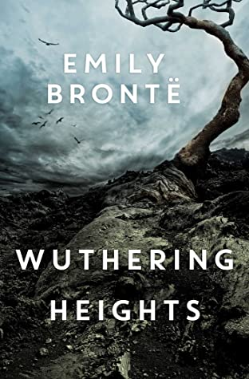
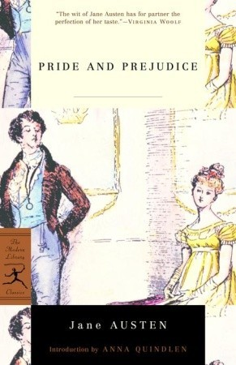
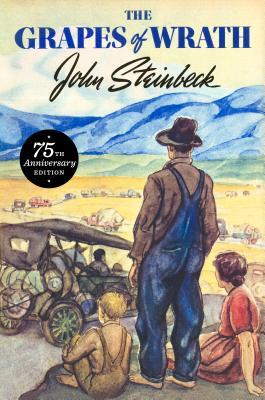
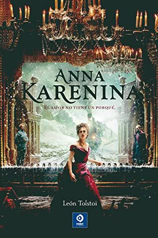

LOVE ROSIE ..This was such a cute book! Although this
was a pretty long book for a contemporary, it covered the lives of
Rosie and Alex from ages 5 to 50 and I remained interested in their
story the whole time. I loved these two characters but at the same
time I wanted to smack them over the head several times for being so
stupid. As for the writing style, it is written in the forms of
letters, emails, chat rooms (hahaha who even uses those even more?)
and instant messages. This took me a while to get into because at
times I felt like it was difficult to understand how much time had
passed since the last section and sometimes I felt that I couldn't
fully connect to the characters. However, I eventually got used to the
writing and it actually made it a quicker read than if it was just
plain narrative prose. Also, the epilogue wrapped the story up so
well! I had so much fun reading this book and I can't wait to watch
the movie with Lily Collins and Sam Claflin (even though I hear it is
pretty much nothing like the book).
THE FAULT IN OUR STARS.. This was such a cute book!
Although this was a pretty long book for a contemporary, it covered
the lives of Rosie and Alex from ages 5 to 50 and I remained
interested in their story the whole time. I loved these two characters
but at the same time I wanted to smack them over the head several
times for being so stupid. As for the writing style, it is written in
the forms of letters, emails, chat rooms (hahaha who even uses those
even more?) and instant messages. This took me a while to get into
because at times I felt like it was difficult to understand how much
time had passed since the last section and sometimes I felt that I
couldn't fully connect to the characters. However, I eventually got
used to the writing and it actually made it a quicker read than if it
was just plain narrative prose. Also, the epilogue wrapped the story
up so well! I had so much fun reading this book and I can't wait to
watch the movie with Lily Collins and Sam Claflin (even though I hear
it is pretty much nothing like the book).

WUTHERING HEIGHTS ..Wuthering Heights takes us to a world
that is somehow outside of all social and moral norms. It's closer to
the realm of dreams or Greek myth than the rational everyday life of
civilised habit. As if the characters are dramatizing the psyche or
the unconscious in the midst of everyday life. Bronte demands we
extend our sympathies beyond their brightly-lit habitual moral
parameters - rather like Nabokov does in Lolita. Except where Nabokov
does it directly through his narrator Bronte is arguably cleverer by
providing us with a rather commonplace and reasonable narrator who
much more mirrors our own sensibility. Nelly is like a comfortable
armchair. You might say the norm in this novel is sociopathic
behaviour and yet Nelly with her commonplace emotional economies
provides the illusion that everything she recounts is firmly attached
to a normal social reality. It's a super clever sleight of hand on
Bronte's part. Thus this is a conventional secular narrative we
experience in Nelly's armchair about a violent amoral world in which
almost everything is outside the realm of civilised etiquette.
THE GREAT GATSBY..The Great Gatsby is your neighbor
you're best friends with until you find out he's a drug dealer. It
charms you with some of the most elegant English prose ever published,
making it difficult to discuss the novel without the urge to stammer
awestruck about its beauty. It would be evidence enough to argue that
F. Scott Fitzgerald was superhuman, if it wasn't for the fact that we
know he also wrote This Side of Paradise.

Pride and Prejudice.. Since its immediate success in
1813, Pride and Prejudice has remained one of the most popular novels
in the English language. Jane Austen called this brilliant work "her
own darling child" and its vivacious heroine, Elizabeth Bennet, "as
delightful a creature as ever appeared in print." The romantic clash
between the opinionated Elizabeth and her proud beau, Mr. Darcy, is a
splendid performance of civilized sparring. And Jane Austen's radiant
wit sparkles as her characters dance a delicate quadrille of
flirtation and intrigue, making this book the most superb comedy of
manners of Regency England.
Fiction Novels
TOP 5 Fiction NOVELS
Don Quixote ..Whatever else Don Quixote may be, I never
found it boring. Parts of it were very funny, others had wonderful
similarities with Shakespeare, some bits were more serious: it's like
a mini library in a single volume. Wonderful. Overall, it has quite a
Shakespearean feel - more in the plotting and tales within tales (eg
The Man Who was Recklessly Curious, stolen by Mozart for Cosi fan
Tutte) than the language. In fact, the story of Cardenio is thought to
be the basis for Shakespeare's lost play of the same name.
1984 Novel.. This book is far from perfect. Its
characters lack depth, its rhetoric is sometimes didactic, its plot
(well, half of it anyway) was lifted from Zumyatin’s We, and the
lengthy Goldstein treatise shoved into the middle is a flaw which
alters the structure of the novel like a scar disfigures a face. But
in the long run, all that does not matter, because George Orwell got
it right. Orwell, a socialist who fought against Franco, watched
appalled as the great Soviet experiment was reduced to a totalitarian
state, a repressive force equal in evil to Fascist Italy or Nazi
Germany. He came to realize that ideology in an authoritarian state is
nothing but a distraction, a shiny thing made for the public to stare
at. He came to realize that the point of control was more control, the
point of torture was more torture, that the point of all their
"alternative facts" was to fashion a world where people would no
longer possess even a word for truth.
animal farm ..ALL ANIMALS ARE EQUAL BUT SOME ARE MORE
EQUAL THAN OTHERS ! In the start, I thought this book would be from
the view point of animals; about how they are treated, how they expect
to be treated and how man is cruel towards them. But but but; I am
amazed at how Orwell criticizes the political maneuvers and
totalitarian rule, using animals to explain what humans do. The author
beautifully portrays the way a revolution is started to stop what is
happening and going full circle comes to the same point it started
from. Just the face of power is changed. This book tells how the
ruling class makes fool of the working class, uses their energies and
resources for their own pleasure. What happens behind the closed doors
of power.
THE Green mile..The Green Mile is a 1996 serial novel by
American writer Stephen King. It tells the story of death row
supervisor Paul Edgecombe's encounter with John Coffey, an unusual
inmate who displays inexplicable healing and empathetic abilities. The
book is an example of magical realism. Featuring a first-person
narrative told by Paul Edgecombe, the novel switches between Paul as
an old man in the Georgia Pines nursing home writing down his story in
1996, and his time in 1932 as the block supervisor of the Cold
Mountain Penitentiary death row, nicknamed "The Green Mile" for the
color of the floor's linoleum.
Fahrenheit 451.. "We are living in a time when flowers
are trying to live on flowers, instead of growing on good rain & black
loam." (111) What outstanding prose--prophetic, which is by far the
most rare and inspiring of attributes a work of literature can ever
possess. & Ray "I Don't Talk Things, Sir. I Talk The Meaning Of
Things" Bradbury is here at his absolute best. I cannot decide whether
this or "Martian Chronicles" is my favorite... they are definitely my
favorite of his, the best possible possibly in ANY sci-fi adventure.
Non-Fiction Novels
TOP 5 Fiction NOVELS
crime and punishment ..There was a time in my life when
I couldn’t get enough of reading Dostoevsky. Maybe because his books
made me think so deeply about being human and how we choose to live
our lives. I began with Crime and Punishment, probably the work he is
best known for. What I remember is being fascinated by Dostoevsky’s
brilliant understanding of human nature. I remember thinking what a
deep study this book was; an incredible examination of a man who
commits murder and how he is “punished” for it.
the brothers karamazov.. If there was still any doubt,
let me confirm that this actually is the greatest book ever written.
But be warned that you need to set aside a solid month to get through
it. And it's not light reading--this is a dense work of philosophy
disguised as a simple murder mystery. But it's well worth the effort.
It tackles the fundamental question of human existence--how best to
live one's life--in a truly engaging way. Dostoevsky created 3
brothers (Ivan, Alexei, and Dmitri) with opposite answers to this
fundamental question, and set them loose in the world to see what
would happen. A testament to Dostoevsky's genius is he didn't know how
the book would evolve when he started writing. As a consequence, the
book really isn't about the plot at all, but about how these brothers
evolve and deal with their struggles based on their differing world
views.

the grapes of wrath ..The Great Depression, told through
the journey of one of the many families of farmers fallen on hard
times in the 1930s. The exhausting search for work, food and a roof
over the head, put a strain on human dignity, and degrade the soul,
making unexpected even genuine attitudes of solidarity by those who
share the same destiny. But hunger and very poor living conditions sow
grains of desperation, from which gems of gall immediately sprout.

Anna Karenina ..This is a book that I was actually
dreading reading for quite some time. It was on a list of books that
I'd been working my way through and, after seeing the size of it and
the fact that 'War And Peace' was voted #1 book to avoid reading, I
was reluctant to ever get started. But am I glad that I did. This is a
surprisingly fast-moving, interesting and easy to read novel. The last
of which I'd of never believed could be true before reading it, but
you find yourself instantly engrossed in this kind of Russian soap
opera, filled with weird and intriguing characters. The most notable
theme is the way society overlooked mens' affairs but frowned on
womens', this immediately created a bond between myself and Anna, who
is an extremely likeable character.
the shawshank redemption.. Shawshank Redemption its been
recommended to me by a friend and then I've read about it in an
article. I couldn't wait to get my hands on it (I can't remember
seeing the movie). I have ordered it on Amazon and had no ideea I've
bought the book Different Seasons. I thought I'm reading Shawshank
Redemption and the I realised there's 4 stories in this book. Towards
the end of it I realised there's even more than 4. There's stories in
stories, which I loved! Each and every little one. I'm aware of the
fact not lots of people like Stephen King, I don't know why. Maybe
because of the crude, horror style. If you're not into that you should
skip it. For me was one of those books which you can't put down, but
sometimes you just have to and you look back at it and think "I'll get
back to you as soon as I can!!". I was happy to read something else
than love stories for a change. And he's good enough to get you hooked
right from the begining of the story and make sure you will come back
over and over till you finish it. They can all finish in a thousand
ways, it's hard to predict what's going to happen. And that is
brilliant. To keep this short - I loved it!